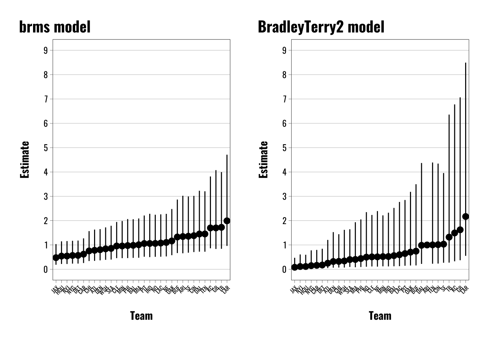
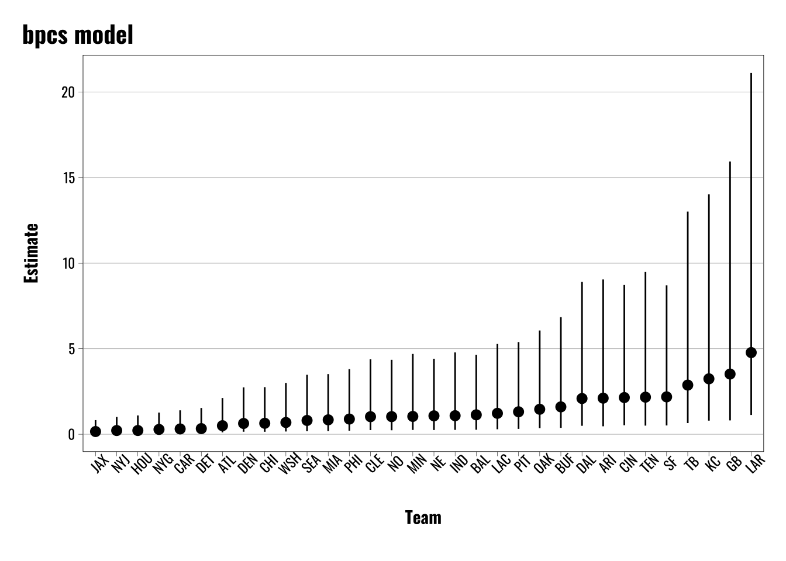
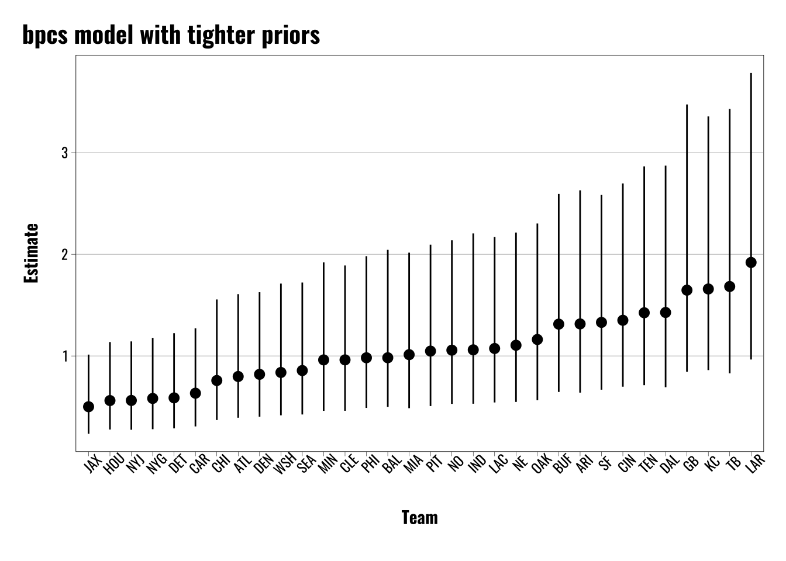
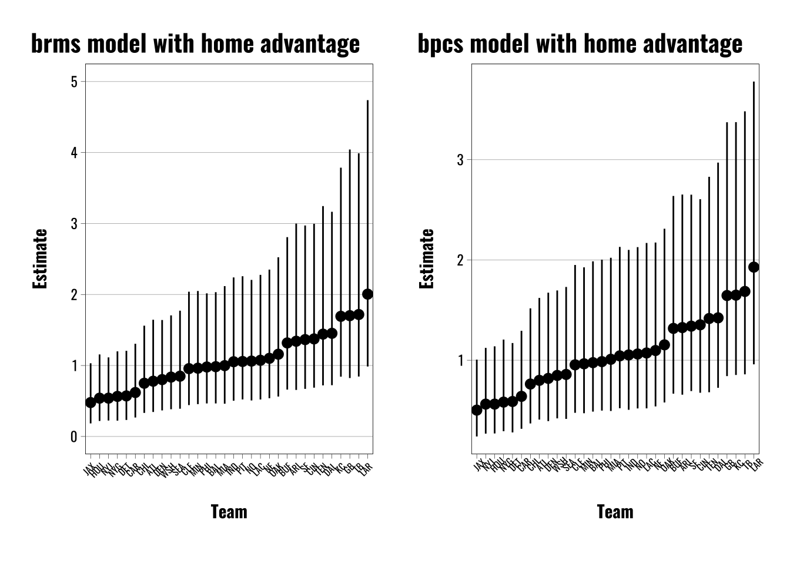

Bradley–Terry Models and Pairwise Comparisons in brms
This is a short primer on how to run a Bradley-Terry Model for pairwise comparisons using brms in R.
blogging
data analysis
data science
dataviz
data visualization
statistics
Author
Michael Flynn
Published
October 28, 2025
TipWho’s this for?
This post is intended as a practical guide for analysts and data scientists who want to implement Bradley-Terry models for pairwise comparison data using {brms} in R. This post assumes you have a basic familiarity with R and the {brms} package. If you don’t, you might want to brush up on those topics first. This can be useful for folks who are wanting to generate rankings of individuals, groups, teams, etc., and who have data on pairwise comparisons (e.g., win/loss data).
Whew—it’s been a minute since I’ve written a blog post. But I recently published a paper that seemed like it would lend itself nicely to a new post, so here we are!
The goal of this post is to help readers to understand how to fit a Bradley-Terry model for pairwise comparison data using the {brms} package in R. Bradley-Terry models are useful for generating rankings of players, groups, teams, etc., in cases where users might be interested in some kind of underlying latent attribute or characteristic. For example, we might be interested in generating latent measure of a team’s skill, or someone’s knowledge of a certain topic. Bradley-Terry models are particularly useful when we have data on pairwise comparisons, such as win/loss data from sports matches, or preference data from surveys.
Below I’ll provide a brief overview of Bradley-Terry Models, what they are, why we might use them, and why we might want to fit one using {brms}, specifically. Then I’ll walk through a simple example of how to fit a Bradley-Terry model using {brms} in R.
What are Bradley-Terry Models?
I’m not intending to provide a comprehensive history of the subject, but it’s maybe worth discussing the development of these models a little bit. Bradley–Terry models, as a broad class of models, generally trace their roots to Bradley and Terry (1952)Rank Analysis of Incomplete Block Designs: The Method of Paired Comparisons. I say “as a broad class of models” because there are a number of different approaches to dealing with paired comparisons, which, according to Bradley and Terry’s own article, go back to at least the 1920s.
These models are generally focused primarily on two goals. First, what is the probability that a given item (e.g. item \(i\)) ranks higher than, or “wins”, when compared with another item (e.g. item \(j\)) in a paired comparison? The second goal is to estimate the “rank” of individual items in relation to one another—essentially a latent dimension.
You can see the two components in Equation 1. The left-hand side of the equation shows the first use—the probability that \(i\) beats \(j\). The right-hand side shows the second part, which essentially represents the latent traits or characteristics of item \(i\) and item \(j\).
These models have a wide range of uses. If you’re new to these and do a quick search you’ll probably stumble on something that uses team sports as an example. For example, what’s the probability that a given soccer team, football team, baseball team, etc., is going to win a given match? We might also be interested in assessing more general latent trait, like a team’s overall “skill” level, by looking at the performance of teams over a given season and using individual matches along with corresponding wins/losses/ties as the basis for the paired comparisons.
It’s worth noting that we’re not limited to these applications, and the paired comparisons framework can be used to address lots of different problems. Interestingly, Guttman (1946) uses a more policy-relevant issue of scoring US Army demobilization score cards at the end of World War II as a motivating example. The central issue was how to weight five different factors on a survey sent to US soldiers that would determine their order or priority for demobilization and discharge from the armed services.
In this example, the specific factors in question were 1) length of time in the Army, 2) the amount of time spent overseas, 3) the amount of combat experience, 4) the soldier’s age, and 5) the number of children the soldier had. I don’t intend to go into a lot of depth on this particular paper, but it’s especially interesting because it sounds like soldiers ultimately didn’t like making paired comparisons between these individual attributes in isolation of the others because they felt that the omitted information was potentially vital to their decision. In this case, the paired comparisons become multidimensional, and the solution looks an awful lot like a conjoint experiment that we’d see used today to compare the influence of different individual variables when presented in combination with one another.
Another area where there is variation in approaches is how to handle ties. Earlier versions of these models (like Guttman (1946)) typically assume away the presence of equivalent judgments, or ties. That’s fine, but sometimes we might care about cases where teams are tied, evaluators are ambivalent between two choices, etc. Later work by Davidson (1970) provides one method for dealing with this. This is also something I’ll address below briefly, but just be aware that there are options here.
Why Would We Use Them?
As with other cases where we might want to compare individuals, items, teams, etc., there are some problems with some of the more basic methods of comparison.
When comparing teams, for example, wins and losses can be potentially misleading if one team has an easier schedule than another. Comparing cumulative scores might also give an inaccurate picture of team performance if teams are competing under more difficult conditions than others (like bad weather or muddy fields).
Similarly, individuals’ test scores might not be a reliable way to evaluate intelligence or ability. Individual test takers can arrive at a comparable or identical score through a wide range of different pathways. Two students might both receive an A grade on an exam with one student missing a mixture of difficult and easy questions and the other missing only the most difficult. There may be good reasons for not wanting to treat these cases as equivalent.
Given the problems with “simpler” alternatives, researchers have developed a range of options for estimating the underlying trait of interest. Education and Psychology for example have developed a variety of different models under the banner of Item Response Theory (IRT) to do just this. These models let us take observational data, which might be complex and difficult to evaluate using simpler methods, and estimate underlying traits of interest using some fairly simple methods.
Estimating Paired Comparisons
Existing Packages and Approaches
There are a number of websites and packages that you can use to estimate Bradley–Terry models. The BradleyTerry2 package is a great starting point for anyone interested in tinkering with these models. Andrew Mack also provides a walk through for how to write up your own Bradley-Terry model. These are both great places to start if you’re looking to familiarize yourself with the models and how they work under the hood.
There are also some useful alternatives to be aware of. The {bpcs} package (which stands for Bayesian Paired Comparison) uses Stan as a backend to estimate paired comparisons. It provides users with a range of options for things like how to handle ties, modeling home advantage, etc.
Why would you choose one package over the other? The Bayesian option is useful because we’re often interested in estimating latent attributes, like skill or knowledge, for the various items or players in our data. Traditionally these models have been estimated using maximum likelihood, but this approach can have limitations in certain context.
Mattos and Silva Ramos, the creators of the {bpcs} package, provide a nice overview of the advantages of the Bayesian approach. For example, in some cases the maximum likelihood estimate isn’t available and models won’t converge. Sometimes this can arise as a result of not having connectivity between individual units through overlapping pairings. Packages like {BradleyTerry2} will also produce latent estimates without corresponding estimates of uncertainty, as you can see in Table 1. The Bayesian approach, on the other hand, provides users with posterior distributions for each individual unit, which can be converted into point estimates, used to generate credible intervals, or sampled for downstream analyses.
# Load example datateamdata <- BradleyTerry2::baseball# Estimate a Bradley-Terry Model# Note that we can bind the two win columns or have a single win columnbt.estimates <- BradleyTerry2::BTm(data = teamdata,player1 = home.team,player2 = away.team,outcome =cbind(home.wins, away.wins))# Extract "ability" estimates and convert to tableBTabilities(bt.estimates) |>as.data.frame() |>tt()
Table 1: Example Bradley–Terry Model Estimates
ability
s.e.
0.0000000
0.0000000
1.1076977
0.3338779
0.6838528
0.3318764
1.4364084
0.3395682
1.5813559
0.3432557
1.2476178
0.3358606
1.2944851
0.3366691
As a quick example using some baseball data from the {BradleyTerry2} package, we can see that the resulting estimates for team strength/ability use Baltimore as an anchor or reference category. While other teams have a coefficient and standard error for the ability estimate, the reference team does not. You can change the reference team, but ultimately end up with the same issue.
Another approach involves the use of multilevel models. van Paridon et al. (2023) offers a method of estimating Bradley–Terry models using a mixed effects multimembership model. In this case, it involves a customized package called {lmerMultiMember} that allows users to estimate multimembership models using the {lme4} package. The primary addition here is that the package essentially incorporates a \(N x k\) weighting matrix, where \(N\) equals the number of rows/observations in the data, and \(k\) represents the number of unique actors, players, items, etc.
Why? Because in this framework we’re essentially using varying intercepts to estimate the latent trait of interest (i.e. skill, ability, knowledge, and so on). In one example van Paridon et al. (2023) provides, we might want to estimate citation counts as a function of some predictor variables, but we also might want to adjust for the fact that some authors—like maybe more famous ones—might be cited more than others.
But including varying intercepts for individual authors can get complicated when using the traditional {lme4} syntax because one individual might fall into multiple grouping columns in the data. For example, ?@tbl-author-order-example shows how we might structure our data in this example. We might have a column for each author based on the ordering of authors on each article in the data, as you can see below.
Table 2: Example of author ordering and group IDs
author_1
author_2
author_3
Dog
Cat
Flynn
Cat
Flynn
Capybara
Flynn
Bird
Dog
In this example we could conceivably fit a model with three varying intercept terms, but the traditional varying intercept syntax, (1 | author_1) + (1 | author_2) + (1 | author_3), would treat an individual author as separate authors depending on where they end up in the author ordering. The problem is treating each author as a single “group” term, regardless of where they end up in the various author columns. This approach wouldn’t help us to generate consolidated estimates for each individual author. That’s where the weighting matrix comes in.
Estimating Bradley-Terry Models Using {brms}
There are a couple of things I really like about the approach developed by van Paridon et al. (2023). First, while it does technically rely on another package, the idea of estimating Bradley–Terry models in a way that relies less on third-party packages, which need to be updated and maintained, is nice. Yes, there’s a special wrapper required for {lme4}, but this seems like a lighter weight option as compared to others. Using {brms} is similarly relying on an additional package, but it’s widely used and can estimate lots of different types of models, rather than a niche package focused on a very specific type of models. Plus, {brms} has convenient functions already built in to set up multimembership groups, so we don’t need to worry about any wrapper packages. So if we’re interested in longevity, I like this.
Second, I like the idea of just using a multilevel model to estimate the pairwise comparisons. While existing packages are great, I think there’s a loss of conceptual clarity with respect to users grasping what’s going on under the hood. At the core, estimating a logit or binomial model is probably much more straightforward for most users. I suspect “varying intercepts” is also (slightly?) more intuitive than language like “latent trait” or “latent dimension”. And {brms} is very, very good for this kind of work.
So how do we go about this in {brms}? Let’s take a look.
The general thrust of the paper I mention above is that we can use LLMs to help us make judgments in pairwise comparisons of open-ended survey responses. So if we ask people questions and they’re free to enter their own response as opposed to choosing from a discrete set of options, then we can use the LLM to evaluate who demonstrates more knowledge, understanding, etc. We do this with a range of LLMs using paired comparisons drawn from survey data that explores respondents’ knowledge about basic economic issues. Essentially we take two random responses and the LLM seems to determine if respondent \(i\) “wins” or “loses” in comparison with respondent \(j\).
Table 3: Example data frame for basic Bradley-Terry Setup
respondent_i
respondent_j
player_i_wins
Player 1
Player 2
1
Player 1
Player 40
0
Player 2
Player 3
0
Player 2
Player 23
1
Table 3 shows the basic arrangement of the data frame in question. The two columns labeled respondent_i and respondent_j simply represent the pairings of two players (these can also be items or whatever we’re comparing). The values in these columns are the unique player IDs. They could also be team names, item numbers, etc. The third column simply denotes whether or not respondent_i “wins” the exchange or not, with “1” indicating a win and “0” indicating a loss (i.e. that respondent_j won the exchange).
There are a couple of things to note since we’re working with a small toy example here. First, in some cases we might have each player paired with every other player so we have \(N (N-1)/2\) observations. This assumes that order doesn’t matter—if it does then we would have \(N(N-1)\) observations. I’ll come back to how we model this, but conceptually it might be the difference between two teams simply playing one another vs two teams playing one another so they each get a shot on their home field. This idea of order, or home field, effects, comes up when you like at different Bradley-Terry packages and matters for model specification.
Second, Where we have a large number of observations we might pair each player with a random selection of other players where \(i \neq j\).
Third, we might also have two players paired up repeatedly. This might occur in cases where order matters, but also where order doesn’t matter. In this case we can move to something like a binomial model rather than a logit. Again, I’ll come back to this later.
OK, so once we have this basic data structure there are a few other things we need to do. First, if you need to resolve ties in some way, this is the place to do it. There are a couple of ways to go about this. One option (if you have this level of control) is to simply force respondents to choose between options. Another option is to take ties and randomly replace them with win/loss values. This may or may not be a viable option for you, and whether or not it’s a good idea can depend on your modeling goals and characteristics of the data. If you have a large proportion of you observations resulting in ties, then you might not want to randomly assign wins/losses.
Second, we need to create some weighting variables for the {brms} formula. Equation 2 shows the basic Bradley-Terry formula again, but this time I want to highlight the two \(\lambda\) elements on the right side. Again, these essentially represent the latent attributes for player \(i\) and player \(j\), respectively. In the equation we can see that we need to take the difference between them to estimate the probability that \(i\) beats \(j\).
To get this effect in our {brms} model we need to create two additional vectors of weights for player \(i\) and player \(j\). Table 4 shows what this looks like. We can see weight_i is a vector that takes on a value of \(+1\) while weight_j is a vector that takes on a value of \(-1\).
Table 4: Example data frame for basic Bradley-Terry Setup with Weights
respondent_i
respondent_j
respondent_i_wins
weight_i
weight_j
Player 1
Player 2
1
1
-1
Player 1
Player 40
0
1
-1
Player 2
Player 3
0
1
-1
Player 2
Player 23
1
1
-1
So why do we do this? The idea here is that we’re modeling the probability that respondent_i wins the match. But as we can see from Table 4 a given player (e.g. Player 2) can end up in both columns. Essentially we want to reward a given player when they’re in the first column (i.e. respondent_i) and they win, but penalize that player when they’re in the second column (i.e. respondent_j) and they lose. That is, our outcome variable is only coded 1 to indicate when respondent_i wins, but the multimembership setup will treat both respondent_i and respondent_j the same and will estimate varying intercepts for each player the calculate the latent probability of observing a win when that player is in a game, even if that player loses. To go back to the citation example, without the weights we’d simply be estimating the latent probability that a given player gets cited if they’re on a paper. So we want the varying intercept for each player to reflect the probability that that player wins, not that we observe a win.
I think that all makes sense?
So what does this look like in practice? If you’re familiar with fitting models in {brms}, and multilevel/hierarchical models in particular, this will be pretty straightforward. I’ve only included the {brms} formula here so we can isolate the relevant parts for the Bradley–Terry Model. Otherwise the remaining arguments for a {brms} model are essentially the same.
The multimembership wrapper adds a little bit of added complexity, but it’s not bad. Ultimately the code is going to look like this.
Equation 3 shows us what this looks like with the weights. Since the weights for respondent_j are necessarily negative, this amounts to the right side of Equation 2 above. We can also see what this looks like if we generate Stan code from the {brms} model. I’ve only included the model chunk, but line 8 shows us the varying intercepts (r) and the multimembership weights (W).
model {// likelihood including constantsif (!prior_only) {// initialize linear predictor term vector[N] mu =rep_vector(0.0, N);for (n in1:N) {// add more terms to the linear predictor mu[n] += W_1_1[n] * r_1_1[J_1_1[n]] * Z_1_1_1[n] + W_1_2[n] * r_1_1[J_1_2[n]] * Z_1_1_2[n]; } target +=bernoulli_logit_lpmf(Y | mu); }
The key difference as mentioned above is the use of the mm() wrapper, which includes both respondent_i and respondent_j columns, along with the weights argument, where we use cbind() to add in the weight columns we created above. Note that the order matters here—if we reverse these then it applies the negative weight to the first column and the positive weight to the second, which we don’t want. We also want scale set to FALSE.
Example Cases
Now that we’ve covered the conceptual groundwork we can move on to some examples. This first example uses NFL data from the {lmerMultiMember} package to demonstrate how the {brms} approach compares with results from the {BradleyTerry2} package.
The first thing we’re going to do is to import the NFL data and do some basic cleaning and organization. As described above, the big things are to create the new weight columns as well as create a variable showing the results of each game.
# Use NFL team data from lmerMultiMember package to fit a Bradley-Terry model using the brms package.# Load NFL datadata <- lmerMultiMember::nfl_scores_2021 |>mutate(visiting_team =factor(visiting_team),home_team =factor(home_team),weight_home =1L,weight_away =-1L,outcome =case_when( winner =="home"~1, winner =="visiting"~0 ))# Fit a brms multimember modelbrms.model <- brms::brm(outcome ~0+ (1|mm(home_team, visiting_team, weights =cbind(weight_home, weight_away),scale =FALSE)),data = data,family =bernoulli(link ="logit"),chains =4,iter =4000,warmup =2000,cores =4,seed =66502,silent =2,prior =c(prior(gamma(1, 0.1), class ="sd")),backend ="cmdstanr",control =list(adapt_delta =0.82,max_treedepth =12))# Fit the same model using the BradleyTerry2 package.bt2model <- BradleyTerry2::BTm(outcome = outcome,player1 = home_team,player2 = visiting_team,data = data)# Extract the team effects/ability scoresBT2.BT.data <- BradleyTerry2::BTabilities(bt2model) |>as.data.frame() |>rownames_to_column() |>arrange(desc(ability)) |> dplyr::rename(team = rowname, estimate =2) |> dplyr::mutate(upper =exp(estimate + (1.96*s.e.)),lower =exp(estimate - (1.96*s.e.)),estimate =exp(estimate)) BT2.BT.plot <-ggplot(data = BT2.BT.data) +geom_pointrange(aes(x =reorder(team, estimate), y = estimate, ymin = lower, ymax = upper), size =0.5) +theme_flynn(base_size =11,base_family ="oswald") +theme(axis.text.x =element_text(angle =45, hjust =1, size =6)) +scale_y_continuous(breaks =seq(0, 9, 1), limits =c(0,9)) +labs(title ="BradleyTerry2 model",x ="Team",y ="Estimate") # Extract varying intercepts/random effects from brms models.ranefs <-as.data.frame(ranef(brms.model)) |>rownames_to_column() |> dplyr::rename(team = rowname, estimate =2, error =3, lower =4, upper =5) |>mutate(across(c(estimate, lower, upper), ~exp(.x))) |>arrange(estimate)# Generate plot for brms modelsbrms.BT.plot <-ggplot(ranefs) +geom_pointrange(aes(x =reorder(team, estimate), y = estimate, ymin = upper, ymax = lower), size =0.5) +theme_flynn(base_size =11,base_family ="oswald") +theme(axis.text.x =element_text(angle =45, hjust =1, size =6)) +scale_y_continuous(breaks =seq(0, 9, 1), limits =c(0,9)) +labs(title ="brms model",x ="Team",y ="Estimate") # Combine plots using patchworkpatchwork::wrap_plots(brms.BT.plot, BT2.BT.plot)

The left panel shows the results from the {brms} model and the right panel from the {BradleyTerry2} package. Note that these are transformed into odds ratios, so the varying intercept estimates are exponentiated. The results are very similar, but there are a few differences worth highlighting.
First, note that this is a toy example that I replicated from van Paridon et al. (2023) where they show how the multimembership approach works for the {lmer} approach. They also provide a straight Stan version. This is actually a helpful reference point for reasons I’ll get to shortly.
Second, both models use a logit link function. Both produce largely similar estimates, but there are some slight differences. The {BradleyTerry2} models are anchored to Arizona, which you can see is the one point without corresponding confidence intervals near the right. The other teams are positioned around this anchor point. At the bottom we see similar orderings from Jacksonville up through the New York Giants.
Third, the errors in the {BradleyTerry2} are much larger than in the {brms} models. I haven’t poked around enough with the package to figure out why exactly, but I’m suspecting it has something to do with the multilevel modeling framework and the shrinkage it imposes. But as I mentioned above, van Paridon et al. (2023) show how to estimate a Bradley-Terry model using Stan and their {lmerMultiMember} package. Both of those approaches yield results largely identical to the {brms} approach. There are still some minor differences, like the {brms} errors are a little larger, but otherwise the results are much closer than with the {BradleyTerry2} package.
Warning: draws_matrix does not support non-numeric variables (e.g., factors).
Converting non-numeric variables to numeric.
Warning in lapply(unclass(x)[non_numeric_cols], as.numeric): NAs introduced by
coercion
# Export estimates for team skillsteams.score.bpcs.index <-as.data.frame(bpcs.model$lookup_table) |> dplyr::mutate(Index =as.numeric(Index))# Combine team names and index id with scores from model# Exponentiate the Median and intervals to match the odds ratio formatting above.teams.score.bpcs <-as.data.frame(bpcs.model$hpdi) |> dplyr::mutate(Index =as.numeric(str_extract(Parameter, "\\d+"))) |>left_join(teams.score.bpcs.index) |> dplyr::select(Index, Names, Mean, Median, everything()) |> dplyr::mutate(across(c(Median, HPD_lower, HPD_higher),~exp(.x))) |> dplyr::mutate(approach ="BPCS") |> dplyr::filter(Parameter !="gm")# Plot resultsggplot(teams.score.bpcs) +geom_pointrange(aes(x =reorder(Names, Median),y = Median,ymin = HPD_lower,ymax = HPD_higher)) +theme_flynn(base_family ="oswald",base_size =11) +theme(axis.text.x.bottom =element_text(angle =45)) +labs(title ="bpcs model",x ="Team",y ="Estimate")
Warning in plot_theme(plot): The `plot.subtitle.position` theme element is not defined in the element
hierarchy.

As with the comparison of the other approaches covered so far, we find broadly similar patterns here. There is some slight slippage in terms of the precise rankings, but the broader patterns are generally the same.
The biggest difference we see here is that the errors are enormous compared with the other methods. This is attributable to me leaving the {bpcs} priors at their defaults, but we can change the results if we alter the priors to be more restrictive.
Below we can see what happens if we tighten the prior for the standard deviation up. The default is 3, but here we can show what happens when we cut that down to 0.5 as an example.
Warning: draws_matrix does not support non-numeric variables (e.g., factors).
Converting non-numeric variables to numeric.
Warning in lapply(unclass(x)[non_numeric_cols], as.numeric): NAs introduced by
coercion
# Export estimates for team skillsteams.score.bpcs.index <-as.data.frame(bpcs.model$lookup_table) |> dplyr::mutate(Index =as.numeric(Index))# Combine team names and index id with scores from model# Exponentiate the Median and intervals to match the odds ratio formatting above.teams.score.bpcs <-as.data.frame(bpcs.model$hpdi) |> dplyr::mutate(Index =as.numeric(str_extract(Parameter, "\\d+"))) |>left_join(teams.score.bpcs.index) |> dplyr::select(Index, Names, Mean, Median, everything()) |> dplyr::mutate(across(c(Median, HPD_lower, HPD_higher),~exp(.x))) |> dplyr::mutate(approach ="BPCS") |> dplyr::filter(Parameter !="gm")# Plot resultsggplot(teams.score.bpcs) +geom_pointrange(aes(x =reorder(Names, Median),y = Median,ymin = HPD_lower,ymax = HPD_higher)) +theme_flynn(base_family ="oswald",base_size =11) +theme(axis.text.x.bottom =element_text(angle =45)) +labs(title ="bpcs model with tighter priors",x ="Team",y ="Estimate")
Warning in plot_theme(plot): The `plot.subtitle.position` theme element is not defined in the element
hierarchy.

While changing the prior can shrink the error estimates for the {bpcs} models, loosening the priors does not have a comparable effect for the {brms} models. While applying extremely broad priors can result in a very small increase in the errors, it’s nothing comparable to the changes we see in the {bpcs} models when we tighten the priors. Again, I assume some of this is driven by the shrinkage of the multilevel modeling framework, but this is something I need to dig into more to confirm.
Order Effects
So far I’ve largely ignored the issue of order effects or “home field advantage”. This isn’t something that I need to spend a lot of time on, but it’s pretty straightforward in terms of incorporating it into the {brms} framework.
Like I’ve already mentioned, Bradley–Terry and pairwise comparison models often look at teams as a way to illustrate the underlying concepts. These examples often draw on the concept of a “home field advantage”, or the idea that a team might enjoy some sort of tangible or intangible benefit from playing on their home turf.
We can apply this concept to other settings, too, if we just change the language to something like an “order effect”. If someone has to choose between two items or teams, it might matter which one they see first. Whether we’re talking about sports or other applications, the basic idea is that Team\(_i\) vs Team\(_j\) is not necessarily the same as Team\(_j\) vs Team\(_i\).
# Use NFL team data from lmerMultiMember package to fit a Bradley-Terry model using the brms package.# Load NFL datadata <- lmerMultiMember::nfl_scores_2021 |>mutate(visiting_team =factor(visiting_team),home_team =factor(home_team),weight_home =1L,weight_away =-1L,outcome =case_when( winner =="home"~1, winner =="visiting"~0 ),home_advantage =1)# Fit a brms multimember modelbrms.model <- brms::brm(outcome ~1+ (1|mm(home_team, visiting_team, weights =cbind(weight_home, weight_away),scale =FALSE)),data = data,family =bernoulli(link ="logit"),chains =4,iter =4000,warmup =2000,cores =4,seed =66502,silent =2,prior =c(prior(gamma(1, 0.1), class ="sd")),backend ="cmdstanr",control =list(adapt_delta =0.82,max_treedepth =12))# Fit bpcs modelbpcs.model <- bpcs::bpc(data = data,player0 ="visiting_team",player1 ="home_team",result_column ="outcome",model_type ='bt-ordereffect',z_player1 ="home_advantage",solve_ties ="none",priors =list(prior_lambda_std =0.5),chains =4,iter =4000,warmup =2000)# Export estimates for team skillsteams.score.bpcs.index <-as.data.frame(bpcs.model$lookup_table) |> dplyr::mutate(Index =as.numeric(Index))# Combine team names and index id with scores from model# Exponentiate the Median and intervals to match the odds ratio formatting above.teams.score.bpcs <-as.data.frame(bpcs.model$hpdi) |> dplyr::mutate(Index =as.numeric(str_extract(Parameter, "\\d+"))) |>left_join(teams.score.bpcs.index) |> dplyr::select(Index, Names, Mean, Median, everything()) |> dplyr::mutate(across(c(Median, HPD_lower, HPD_higher),~exp(.x))) |> dplyr::mutate(approach ="BPCS") |> dplyr::filter(Parameter !="gm")# Plot resultsbpcs.plot <-ggplot(teams.score.bpcs) +geom_pointrange(aes(x =reorder(Names, Median),y = Median,ymin = HPD_lower,ymax = HPD_higher)) +theme_flynn(base_family ="oswald",base_size =11) +theme(axis.text.x.bottom =element_text(angle =45,size =6)) +labs(title ="bpcs model with home advantage",x ="Team",y ="Estimate")# Extract varying intercepts/random effects from brms models.ranefs <-as.data.frame(ranef(brms.model)) |>rownames_to_column() |> dplyr::rename(team = rowname, estimate =2, error =3, lower =4, upper =5) |>mutate(across(c(estimate, lower, upper), ~exp(.x))) |>arrange(estimate)# Generate plot for brms modelsbrms.BT.plot <-ggplot(ranefs) +geom_pointrange(aes(x =reorder(team, estimate), y = estimate, ymin = upper, ymax = lower), size =0.5) +theme_flynn(base_size =11,base_family ="oswald") +theme(axis.text.x =element_text(angle =45, hjust =1, size =6)) +scale_y_continuous(breaks =seq(0, 5, 1), limits =c(0,5)) +labs(title ="brms model with home advantage",x ="Team",y ="Estimate") # Combine plots using patchworkpatchwork::wrap_plots(brms.BT.plot, bpcs.plot)

We can see how to do this most clearly with the {bpcs} package and {brms}. To incorporate a home advantage effect or an order effect all we have to do is create a constant value—1 in this case—to include in the {bpcs} model argument labeled z_player1. The help file explains this:
A string with the name of the column containing the order effect for player 1. E.g. if player1 has the home advantage this column should have 1 otherwise it should have 0
To do the same thing in {brms} all we have to do is add a constant value (e.g. 1) to the model formula. That’s it! The intuition here is pretty simple. If the intercept value shows us the baseline log-odds when all other predictors are set to 0, then estimating the population intercept is showing us the baseline log-odds for the population of teams when the varying intercepts are “turned off”, so to speak.
We can see what this looks like in the model outputs below. In the case of the {bpcs} package, we see the gm parameter estimate of -0.062 beneath the team estimates. For the {brms} model we see the Intercept estimate is 0.06.
summary(brms.model)
Family: bernoulli
Links: mu = logit
Formula: outcome ~ 1 + (1 | mm(home_team, visiting_team, weights = cbind(weight_home, weight_away), scale = FALSE))
Data: data (Number of observations: 285)
Draws: 4 chains, each with iter = 4000; warmup = 2000; thin = 1;
total post-warmup draws = 8000
Multilevel Hyperparameters:
~mmhome_teamvisiting_team (Number of levels: 32)
Estimate Est.Error l-95% CI u-95% CI Rhat Bulk_ESS Tail_ESS
sd(Intercept) 0.54 0.16 0.25 0.86 1.00 3292 4082
Regression Coefficients:
Estimate Est.Error l-95% CI u-95% CI Rhat Bulk_ESS Tail_ESS
Intercept 0.06 0.13 -0.18 0.32 1.00 14079 5598
Draws were sampled using sample(hmc). For each parameter, Bulk_ESS
and Tail_ESS are effective sample size measures, and Rhat is the potential
scale reduction factor on split chains (at convergence, Rhat = 1).
bpcs.model
Estimated baseline parameters with 95% HPD intervals:
Warning: draws_matrix does not support non-numeric variables (e.g., factors).
Converting non-numeric variables to numeric.
Warning in lapply(unclass(x)[non_numeric_cols], as.numeric): NAs introduced by
coercion
Table: Parameters estimates
Parameter Mean Median HPD_lower HPD_higher
------------ ------- ------- ---------- -----------
lambda[DAL] 0.358 0.359 -0.346 1.057
lambda[LAC] 0.068 0.069 -0.642 0.778
lambda[PHI] -0.011 -0.009 -0.725 0.677
lambda[PIT] 0.047 0.046 -0.647 0.734
lambda[MIN] -0.039 -0.037 -0.772 0.642
lambda[JAX] -0.699 -0.697 -1.410 0.049
lambda[NYJ] -0.577 -0.576 -1.325 0.117
lambda[ARI] 0.276 0.276 -0.444 0.976
lambda[SEA] -0.155 -0.153 -0.848 0.573
lambda[SF] 0.290 0.286 -0.423 0.934
lambda[MIA] 0.010 0.010 -0.693 0.711
lambda[GB] 0.507 0.502 -0.166 1.232
lambda[CLE] -0.047 -0.045 -0.743 0.674
lambda[DEN] -0.203 -0.201 -0.924 0.515
lambda[CHI] -0.281 -0.277 -0.986 0.451
lambda[BAL] -0.019 -0.018 -0.708 0.691
lambda[NYG] -0.542 -0.539 -1.245 0.187
lambda[HOU] -0.585 -0.585 -1.324 0.105
lambda[OAK] 0.146 0.146 -0.563 0.841
lambda[NO] 0.062 0.061 -0.667 0.754
lambda[NE] 0.101 0.103 -0.590 0.796
lambda[LAR] 0.658 0.653 -0.038 1.320
lambda[CIN] 0.304 0.302 -0.358 0.992
lambda[BUF] 0.278 0.282 -0.428 0.943
lambda[ATL] -0.220 -0.222 -0.915 0.497
lambda[TEN] 0.348 0.350 -0.373 1.027
lambda[KC] 0.506 0.508 -0.206 1.159
lambda[DET] -0.536 -0.531 -1.270 0.161
lambda[CAR] -0.451 -0.449 -1.157 0.269
lambda[WSH] -0.168 -0.165 -0.879 0.525
lambda[IND] 0.053 0.053 -0.669 0.751
lambda[TB] 0.521 0.520 -0.174 1.200
gm -0.063 -0.062 -0.306 0.182
NOTES:
* A higher lambda indicates a higher team ability
* Large positive values of the gm parameter indicate that player 1 has a disadvantage. E.g. in a home effect scenario positive values indicate a home disadvantage.
* Large negative values of the gm parameter indicate that player 1 has an advantage. E.g. in a home effect scenario negative values indicate a home advantage.
* Values of gm close to zero indicate that the order effect does not influence the contest. E.g. in a home effect it indicates that player 1 does not have a home advantage nor disadvantage.
While the absolute values are the same, the direction is obviously different. The {bcps} notes for the model shed some light on this, and I think it has to do with the somewhat odd way players are categorized in the function.
NOTES: * A higher lambda indicates a higher team ability * Large positive values of the gm parameter indicate that player 1 has a disadvantage. E.g. in a home effect scenario positive values indicate a home disadvantage. * Large negative values of the gm parameter indicate that player 1 has an advantage. E.g. in a home effect scenario negative values indicate a home advantage. * Values of gm close to zero indicate that the order effect does not influence the contest. E.g. in a home effect it indicates that player 1 does not have a home advantage nor disadvantage.
As the notes show, negative values actually indicate a home player advantage. This is a little bit counterintuitive, but it ultimately indicates the same thing as the {brms} models—the estimates and credible intervals are nearly identical, just inverted in the {bpcs} models. Overall both models show there’s not much evidence in favor of a home field advantage.
Takeaways
Working through these examples was a great exercise, and it was fun getting to play around with these models. There are also some useful extensions beyond what I’ve done here. For example, you can do a lot of the same things I did here with binomial models in the case of repeat matches between players. You just have to add a trials() argument to the left side of the model formula. You can also play around with different methods for resolving ties. I discuss this above, but what approach I played with involved using ordered logistic regressions rather than the regular logit used here. And even though the models are often framed as a way to find the probability that a given item or team “beats” another, I think the estimation of latent attributes, like skill or ability, would often be of greater interest to people in disciplines like mine. And {brms} is a great way to approach these models because it facilitates a more transparent and flexible way of dealing with this general class of models.
References
Bradley, Ralph Allan, and Milton E. Terry. 1952. “Rank Analysis of Incomplete Block Designs: I. The Method of Paired Comparisons.”Biometrika 39 (3/4): 324–45. https://doi.org/10.2307/2334029.
Davidson, Roger R. 1970. “On Extending the Bradley-Terry Model to Accommodate Ties in Paired Comparison Experiments.”Journal of the American Statistical Association 65 (329): 317–28. https://doi.org/10.1080/01621459.1970.10481082.
Guttman, Louis. 1946. “An Approach for Quantifying Paired Comparisons and Rank Order.”The Annals of Mathematical Statistics 17 (2): 144–63. https://doi.org/10.1214/aoms/1177730977.
van Paridon, JP, Ben Bolker, and Phillip Alday. 2023. lmerMultiMember: Multiple Membership Random Effects. Manual.